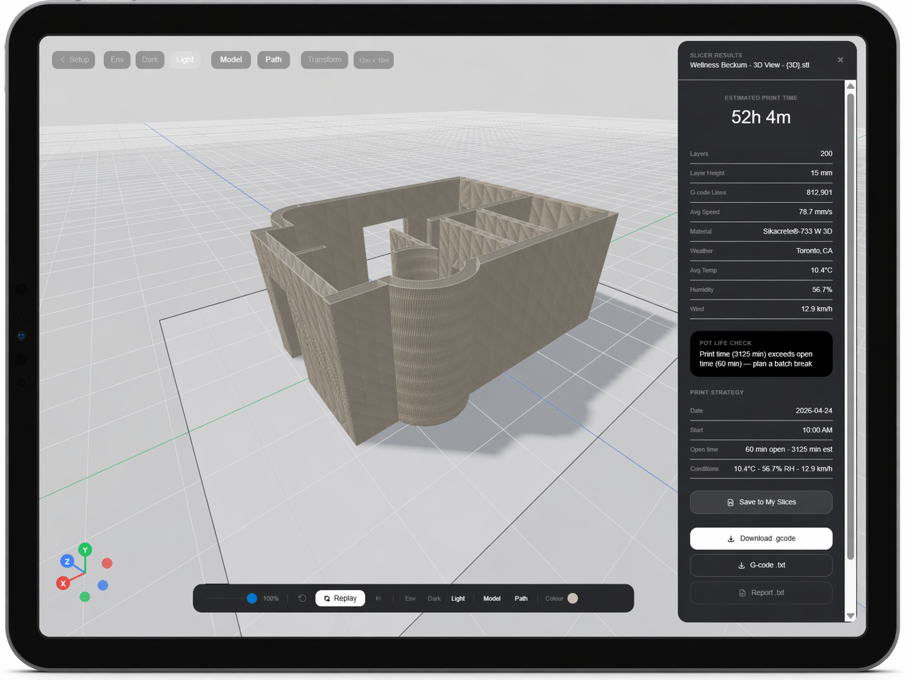

The only slicer that factors in your material, environment, and build conditions before computing a single path.

Drop in any STL or OBJ. The slicer parses your geometry and prepares it for environment-aware path computation.
Enter your city, material mix, and planned start time. Live weather, open time, and pot life margins computed automatically.
Receive an optimized print strategy with travel savings, a full summary, and pot life warning if conditions are tight.
Standard slicers compute paths purely from geometry. They don't know your material's open time. They don't know if it's 34°C and humid.
AutoBuild AI's RL slicer is trained on real print conditions — minimizing travel, avoiding pot life violations, and producing G-code ready for the real world.